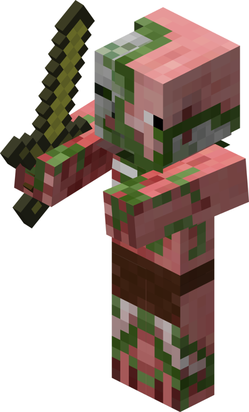
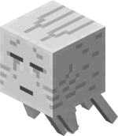
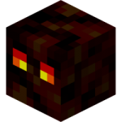
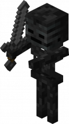
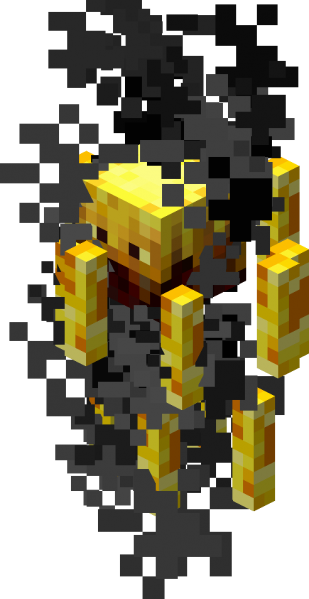
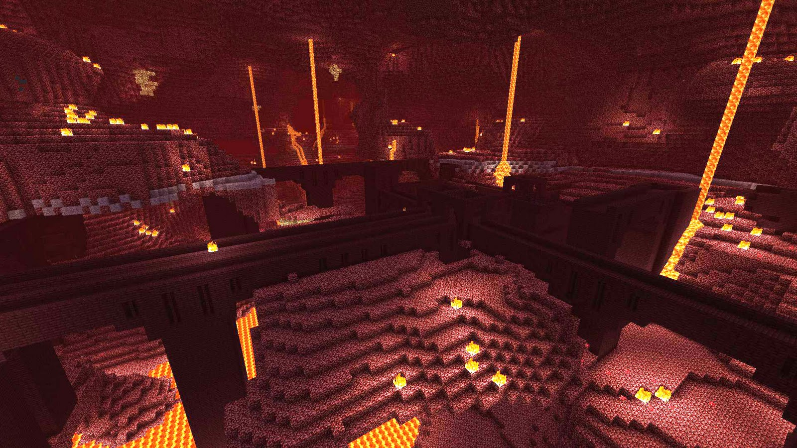

Here are the mobs found in the nether. From left to right, they are: Zombie Pigman, Ghast, Magma cube, Wither Skeleton, Blaze.

Zombie Pigman

Ghast

Magma Cube

Wither Skeleton

Blaze
Those mobs can usually be found anywhere in the nether, but the blaze and wither skeleton can only be found in nether fortresses, which look like this(below).

There is one ore you will find in the nether. it is Quartz ore. It is quite distinguishable because of its white slashes, it stands out from the netherrack(the block that makes up this background image). Quartz is used to make cool-looking blocks through crafting, and you can build with quartz blocks, or use the quartz itself to create an advanced redstone unit called a comparator.